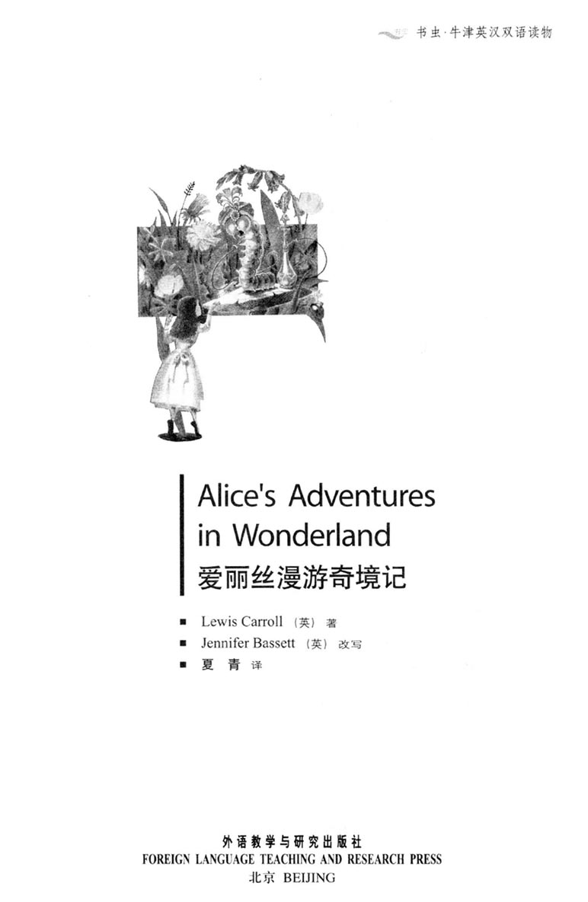
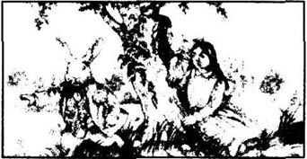
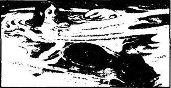
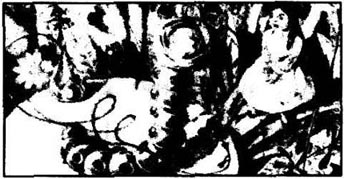
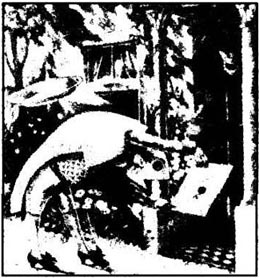
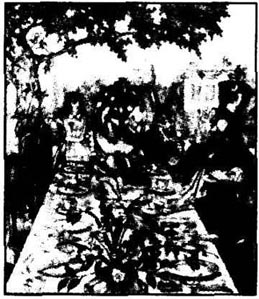
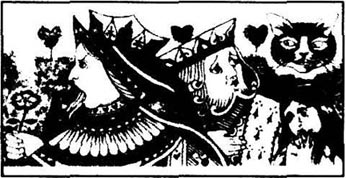
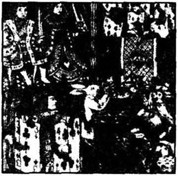
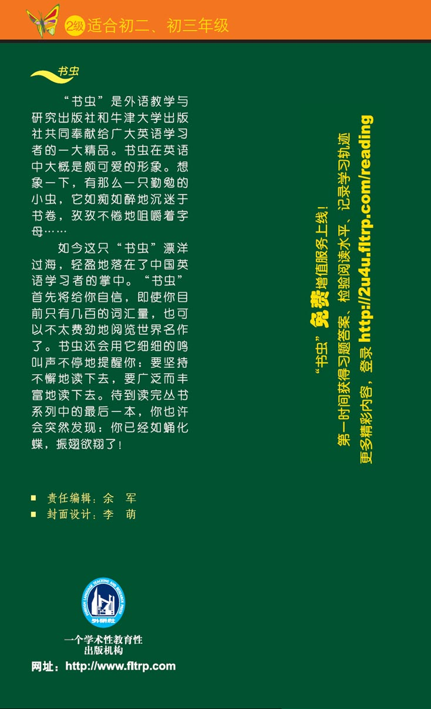

扉页

版权页
京权图字 01-96-1591
Originally published by Oxford University Press, Great Clarendon Street, Oxford. © 1994
This edition is licensed for sale in the People's Republic of China only and not for export therefrom.
'Oxford' is a registered trademark of Oxford University Press.
只限中华人民共和国境内销售，不包括香港特别行政区、澳门特别行政区及台湾省。不得出口。
图书在版编目（CIP）数据
爱丽丝漫游奇境记：英汉对照／（英）卡罗尔（Carroll, L.）著；（英）巴西特（Bassett, J.）改写；夏青译．—北京：外语教学与研究出版社，1997.1（2014.11重印）
（书虫·牛津英汉双语读物）
书名原文：Alice's Adventures in Wonderland
ISBN 978-7-5600-1176-9
Ⅰ．①爱… Ⅱ．①卡…②巴…③夏… Ⅲ．①英语—汉语—对照读物②童话—英国—近代 Ⅳ．①H319.4:I
中国版本图书馆CIP数据核字（2011）第087024号
出版人： 蔡剑峰
责任编辑：田 娜
封面设计：李 萌
出版发行：外语教学与研究出版社
社 址：北京市西三环北路19号（100089）
网 址：http://www.fltrp.com
版 次：1997年1月第1版
书 号：ISBN 978-7-5600-1176-9
* * *
凡侵权、盗版书籍线索，请联系我社法律事务部
举报电话：（010）88817519 电子邮箱：banquan@fltrp.com
法律顾问：立方律师事务所 刘旭东律师
中咨律师事务所 殷 斌律师
简介
简 介
“你得知道，这儿人人都是疯子。”切舍猫说，“我是疯子，你也是疯子。”
“你怎么知道我疯了？”爱丽丝问。
“你当然是疯子，”切舍猫说，“到这儿来的人都疯了。”
这是爱丽丝在很早以前一个夏日里的梦。在这梦的奇境里，白兔戴着白手套，毛虫吸着烟斗……疯了的制帽人和三月兔总是在喝茶，而红桃王后要砍掉每一个人的头……这故事很奇怪，可是，在梦境里什么都会发生。
刘易斯·卡洛尔（他的真名叫查尔斯·道森）生于1832年，死于1898年。他在牛津大学教数学。《爱丽丝漫游奇境记》是写给一个名叫爱丽丝·利得尔的小女孩的。后来他又写了一本《透过镜子》，这两部爱丽丝的故事都是最著名的儿童读物。
目录
1 Down the rabbit-hole
1
Down the rabbit-hole
Alice was beginning to get very bored. She and her sister were sitting under the trees. Her sister was reading, but Alice had nothing to do. Once or twice she looked into her sister's book, but it had no pictures or conversations in it.
'And what is the use of a book,' thought Alice, 'without pictures or conversations?'
She tried to think of something to do, but it was a hot day and she felt very sleepy and stupid. She was still sitting and thinking when suddenly a White Rabbit with pink eyes ran past her.
There was nothing really strange about seeing a rabbit. And Alice was not very surprised when the Rabbit said, 'Oh dear! Oh dear! I shall be late!' (Perhaps it was a little strange, Alice thought later, but at the time she was not surprised.)
But then the Rabbit took a watch out of its pocket, looked at it, and hurried on. At once Alice jumped to her feet.
'I've never before seen a rabbit with either a pocket, or a watch to take out of it,' she thought. And she ran quickly across the field after the Rabbit. She did not stop to think, and when the Rabbit ran down a large rabbit-hole, Alice followed it immediately.
After a little way the rabbit-hole suddenly went down, deep into the ground. Alice could not stop herself falling, and down she went, too.
It was a very strange hole. Alice was falling very slowly, and she had time to think and to look around her. She could see nothing below her because it was so dark. But when she looked at the sides of the hole, she could see cupboards and books and pictures on the walls. She had time to take things out of a cupboard, look at them, and then put them back in a cupboard lower down.
'Well!' thought Alice. 'After a fall like this, I can fall anywhere! I can fall downstairs at home, and I won't cry or say a word about it!'
Down, down, down. 'How far have I fallen now?' Alice said aloud to herself. 'Perhaps I'm near the centre of the earth. Let me think... That's four thousand miles down.' (Alice was very good at her school lessons and could remember a lot of things like this.)
Down, down, down. Would she ever stop falling? Alice was very nearly asleep when, suddenly, she was sitting on the ground. Quickly, she jumped to her feet and looked around. She could see the White Rabbit, who was hurrying away and still talking to himself. 'Oh my ears and whiskers!' he was saying. 'How late it's getting!'
Alice ran after him like the wind. She was getting very near him when he suddenly turned a corner. Alice ran round the corner too, and then stopped. She was now in a long, dark room with doors all round the walls, and she could not see the White Rabbit anywhere.
She tried to open the doors, but they were all locked. 'How will I ever get out again?' she thought sadly. Then she saw a little glass table with three legs, and on the top of it was a very small gold key. Alice quickly took the key and tried it in all the doors, but oh dear! Either the locks were too big, or the key was too small, but she could not open any of the doors.
Then she saw another door, a door that was only forty centimetres high. The little gold key unlocked this door easily, but of course Alice could not get through it — she was much too big. So she lay on the floor and looked through the open door, into a beautiful garden with green trees and bright flowers.
Poor Alice was very unhappy. 'What a wonderful garden!' she said to herself. 'I'd like to be out there — not in this dark room. Why can't I get smaller?' It was already a very strange day, and Alice was beginning to think that anything was possible.
After a while she locked the door again, got up and went back to the glass table. She put the key down and then she saw a little bottle on the table ('I'm sure it wasn't here before,' said Alice). Round the neck of the bottle was a piece of paper with the words DRINK ME in large letters.
But Alice was a careful girl. 'It can be dangerous to drink out of strange bottles,' she said. 'What will it do to me?' She drank a little bit very slowly. The taste was very nice, like chocolate and oranges and hot sweet coffee, and very soon Alice finished the bottle.
* * *
'What a strange feeling!' said Alice. 'I think I'm getting smaller and smaller every second.'
And she was. A few minutes later she was only twenty-five centimetres high. 'And now,' she said happily, 'I can get through the little door into that beautiful garden.'
She ran at once to the door. When she got there, she remembered that the little gold key was back on the glass table. She ran back to the table for it, but of course, she was now much too small! There was the key, high above her, on top of the table. She tried very hard to climb up the table leg, but she could not do it.
At last, tired and unhappy, Alice sat down on the floor and cried. But after a while she spoke to herself angrily.
'Come now,' she said. 'Stop crying at once. What's the use of crying?' She was a strange child, and often talked to herself like this.
Soon she saw a little glass box near her on the floor. She opened it, and found a very small cake with the words EAT ME on it.
Nothing could surprise Alice now. 'Well, I'll eat it,' she said. 'If I get taller, I can take the key off the table. And if I get smaller, I can get under the door. One way or another, I'll get into the garden. So it doesn't matter what happens!'
She ate a bit of the cake, and then put her hand on top of her head. 'Which way? Which way?' she asked herself, a little afraid. Nothing happened. This was not really surprising. People don't usually get taller or shorter when they eat cake. But a lot of strange things were happening to Alice today. 'It will be very boring,' she said, 'if nothing happens.'
So she went on eating, and very soon the cake was finished.
conversation n. talking between two or more people. 会话；谈话。
stupid adj. foolish with very slow thinking. 愚蠢的；蠢笨的。
strange adj. that you do not know; surprising because it does not often happen. 陌生的；奇怪的。
dark n. where there is no light. 黑暗；暗处。
cupboard n. piece of furniture, with shelves and doors, for keeping things in. 碗橱；小橱；柜子。
centre n. middle part or point. 中心；中央。
jumped to her feet move quickly off the ground. 她跳了起来。
whiskers n. the long hairs that grow near the mouth of (the rabbit).（兔子）胡须。
locked adj. a locked door. 锁着的门。
key n. piece of metal that opens a lock. 钥匙。
centimetre n. measure of length. 厘米。
garden n. piece of open land where flowers grow. 花园。
wonderful adj. that pleases and surprises you very much. 惊人的；奇妙的；精彩的。
drink v. take water, milk, coffee, etc. in through the mouth. 喝；饮。
dangerous adj. that will probably bring harm. 危险的。
second n. sixtieth part of a minute. 秒；1/60分。
remember v. keep something in your mind. 记住；想起。
top n. highest part. 顶端；最上部。
climb v. go up with the help of both hands and feet. 爬；攀登。
eat v. put food in your mouth and swallow it. 吃。
way n. road, route, how you go from one place to another. 路；路线；路途。
afraid adj. having fear. 害怕。
happen v. be, take place. 发生。
boring adj. dull, not interesting. 令人厌烦的；没有意思的。
1 掉进兔子洞
1 掉进兔子洞

爱丽丝开始觉得有点无聊了。她和姐姐正坐在树下。姐姐在看书，而爱丽丝无事可做。她不时看看姐姐的书，里面既没有图画，也没有对话。
“一本书没有图画和对话有什么用呢？”爱丽丝想。
她想找点什么事儿做做，可天气很热，她觉得又困又无聊。正坐在那儿想事，忽然，一只长着粉红眼睛的白兔跑过她身边。
看到一只兔子并没有什么可奇怪的。兔子说话时爱丽丝居然也不觉得太奇怪。兔子说：“噢，天哪！噢，天哪！我要迟到了！”（后来爱丽丝想起这事觉得是有点儿奇怪，但当时她并不觉得有什么奇怪。）
然后兔子从自己的口袋里掏出一块表，看了看，又开始赶路。爱丽丝立刻跳了起来。
“我从未见过有口袋的兔子，或者兔子掏出一块手表来。”她想。她跟在兔子后面很快跑过田野。当兔子跑进一个大兔子洞时，爱丽丝也没停下来想一想，立即跟了进去。
走了一小段，兔子洞突然向下转，直深入地下。爱丽丝不由自主地掉了下去。
这个兔子洞很奇怪。爱丽丝往下掉得很慢，来得及看看四周。下面很暗，她什么也看不清。但她看到洞壁上有小柜子、书和画儿。她有时间从柜子里拿点东西，看上一眼，再放到下面的柜子里。
“嗯，”爱丽丝想，“跌了这一下子，我到哪儿也不会怕跌倒了！以后在家里跌下楼梯，我不会哭也不会说什么。”
往下掉呀，掉呀，掉呀。爱丽丝自言自语：“现在我掉下来了多深？也许我快到地球中心了。让我想想……那是地下4000英里。”（爱丽丝功课不错，能记住好多这样的事。）
掉呀，掉呀，掉呀。什么时候才能停下来呢？爱丽丝都快睡着了，突然，她一下坐到了地上。她很快跳了起来，看了看周围。她看见白兔正急匆匆走开，还在自言自语：“噢，我的耳朵和胡子！现在太晚了！”
爱丽丝跟在他后面像风一样跑起来。她就快追上他了，兔子突然转了个弯。爱丽丝也转过弯，然后停了下来。这是一个狭长的房间，很暗，墙四周都是门。她看不清白兔在哪儿。
她试着推开门，可门都锁着。“我怎么才能再出去呢？”她想，伤心极了。接着她看见一张三条腿的小玻璃桌，上面放了一把很小的金钥匙。爱丽丝马上拿起钥匙，试了试所有的门，可是天哪！要不就是锁太大了，要不就是钥匙太小了，她一个门也打不开。
这时，她看见另有一个门，只有40厘米高。小金钥匙轻而易举就打开了门，可爱丽丝过不去——她太大了。她趴在地上看过去，门外是一个美丽的花园，里面长着绿树和鲜艳的花儿。
可怜的爱丽丝难过极了。“多漂亮的花园呀！”她想。“我要出去——不想待在这个黑屋子里。可我怎么才能变得小一点呢？”今天真是奇怪的一天，爱丽丝开始琢磨什么事都可能发生。
过了一会她锁上门，站起来回到玻璃桌那儿。她放下钥匙，然后看见桌上有个小瓶子（“我敢肯定刚才它不在这儿，”爱丽丝说）。瓶颈上有一张纸，上面写着大大的两个字“喝我”。
但爱丽丝是个细心谨慎的女孩。“喝奇怪的瓶子里的东西会很危险，”她说。“喝了我会怎么样呢？”她慢慢喝了一点点。味道不错，有点儿像巧克力、橘汁和热的甜咖啡。爱丽丝很快把一瓶都喝了。
* * *
“感觉真奇怪！”爱丽丝说，“我想每秒钟我都在越变越小。”
她是在变小。几分钟后她只有25厘米高了。“现在，”她高兴地说，“我能穿过那扇小门去花园里了。”
她立刻跑到门那儿。到了那儿她想起来那把小金钥匙还在那个玻璃桌上。她跑回去拿，可是，她现在太小了！钥匙放得很高，在桌子上呢。她想爬上桌子腿，但爬不上去。
最后，爱丽丝又累又伤心，坐在地板上哭了起来。哭了一会儿她生气地自言自语起来。
“噢，现在，”她说。“快别哭了。哭有什么用呢？”她是个挺怪的孩子，总是这样对自己说话。
很快，她看见自己身边的地板上有一个小盒子。她打开后发现里面有一小块蛋糕，上面写着“吃我”。
现在没什么能让爱丽丝奇怪的了。“好，吃就吃，”她说。“如果我长高了，就能从桌子上拿钥匙了。如果我变小点就能穿过门了。不管怎样，我得去花园里。发生什么都不要紧！”
她吃了点蛋糕，然后把手放在头顶。“是变大了还是变小了？”她问自己，心里有点害怕。什么也没发生。这一点也不奇怪。一般来说，人们吃点蛋糕并不见得就长高或变矮。但今天，爱丽丝身上发生了许多奇怪的事。“如果什么都没发生，”她说，“那太没意思了。”
于是她接着吃，一会儿蛋糕就吃完了。
2 The pool of tears
2
The pool of tears
'Curiouser and curiouser!' said Alice. (She was very surprised, and for a minute she forgot how to speak good English.)
'I shall be as tall as a house in a minute,' she said. She tried to look down at her feet, and could only just see them. 'Goodbye, feet!' she called. 'Who will put on your shoes now? Oh dear! What nonsense I'm talking!'
Just then her head hit the ceiling of the room. She was now about three metres high. Quickly, she took the little gold key from the table and hurried to the garden door.
Poor Alice! She lay on the floor and looked into the garden with one eye. She could not even put her head through the door.
She began to cry again, and went on crying and crying. The tears ran down her face, and soon there was a large pool of water all around her on the floor. Suddenly she heard a voice, and she stopped crying to listen.
'Oh, the Duchess, the Duchess! She'll be so angry! I'm late, and she's waiting for me. Oh dear, oh dear!'
It was the White Rabbit again. He was hurrying down the long room, with some white gloves in one hand and a large fan in the other hand.
Alice was afraid, but she needed help. She spoke in a quiet vioce. 'Oh, please, Sir—'
The Rabbit jumped wildly, dropped the gloves and the fan, and hurried away as fast as he could.
Alice picked up the fan and the gloves. The room was very hot, so she began to fan herself while she talked. 'Oh dear! How strange everything is today! Did I change in the night? Am I a different person today? But if I'm a different person, then the next question is — who am I? Ah, that's the mystery.'
She began to feel very unhappy again, but then she looked down at her hand. She was wearing one of the Rabbit's white gloves. 'How did I get it on my hand?' she thought. 'Oh, I'm getting smaller again!' She looked round the room. 'I'm already less than a metre high. And getting smaller every second! How can I stop it?' She saw the fan in her other hand, and quickly dropped it.
She was now very, very small — and the little garden door was locked again, and the little gold key was lying on the glass table.
'Things are worse than ever,' thought poor Alice. She turned away from the door, and fell into salt water, right up to her neck. At first she thought it was the sea, but then she saw it was the pool of tears. Her tears. Crying makes a lot of tears when you are three metres tall.
'Oh, why did I cry so much?' said Alice. She swam around and looked for a way out, but the pool was very big. Just then she saw an animal in the water near her. It looked like a large animal to Alice, but it was only a mouse.
'Shall I speak to it?' thought Alice. 'Everything's very strange down here, so perhaps a mouse can talk.'
So she began: 'Oh Mouse, do you know the way out of this pool? I am very tired of swimming, oh Mouse!' (Alice did not know if this was the right way to speak to a mouse. But she wanted to be polite.)
The mouse looked at her with its little eyes, but it said nothing.
'Perhaps it doesn't understand English,' thought Alice. 'Perhaps it's a French mouse.' So she began again, and said in French：'Where is my cat?' (This was the first sentence in her French lesson-book.)
The mouse jumped half out of the water and looked at her angrily.
'Oh, I'm so sorry!' cried Alice quickly. 'Of course, you don't like cats, do you?'
'Like cats?' cried the mouse in a high, angry voice. 'Does any mouse like cats?'
'Well, perhaps not,' Alice began kindly.
But the mouse was now swimming quickly away, and soon Alice was alone again. At last she found her way out of the pool and sat down on the ground. She felt very lonely and unhappy. But after a while the White Rabbit came past again, looking for his white gloves and his fan.
'The Duchess! The Duchess! Oh my ears and whiskers! She'll cut my head off, I know she will! Oh, where did I drop my gloves?' Then he saw Alice. 'Why, Mary Ann, what are you doing here? Run home at once, and bring me some gloves and a fan. Quick, now!'
Alice hurried away. 'But where is his house?' she thought while she ran. Strangely, she was no longer in the long room with the little door, but outside in a wood. She ran and ran but could not see a house anywhere, so she sat down under a flower to rest.
pool n. hollow in the ground, where water lies. 水池；水坑。
nonsense n. silly ideas. 胡说；傻话；废话。
ceiling n. the part of the room over your head. 天花板。
poor adj. that makes you feel sad. 可怜的。
duchess n. noblewoman; wife of a duke. 公爵夫人；女公爵。
wildly adv. in an excited, violent way. 狂热地；疯狂地；胡乱地。
change v. become different. 变；改变；变化。
mystery n. strange happening or person that you cannot understand or explain. 难以理解的人或事；神秘；奥妙。
unhappy adj. not happy. 不高兴的。
animal n. a living creature, having senses and able to move itself when it wants to. 动物。
mouse n. mice, a small furry animal with a long tail that lives in houses and in fields. 老鼠，耗子。
polite adj. having or showing good manners, consideration for others, and /or correct social behavior. 有礼貌的，有教养的，关心别人的。
angrily adv. 发怒地，生气地。
wood n. (=woods) a place where trees grow, smaller than a forest. 小树林。
rest v. to take a rest. 得到休息。
2 泪水潭
2 泪水潭

“越奇越怪！”爱丽丝说。（她很奇怪，一会儿她就忘了怎么正确表达了。）
“只需要一分钟我就会长得像一所房子那么高，”她说。她试着看看自己的脚，刚刚能看到脚。“再见吧，脚！”她叫了起来，“现在谁能穿上你的鞋？噢天哪！我在胡说些什么呀！”
正在这时，她的头碰到了天花板上。她现在大约有3米高。她赶快从桌上拿了小金钥匙，跑到通往花园的门那儿。
可怜的爱丽丝！她趴在地板上，用一只眼睛往花园里瞧。她连头都塞不进门里。
她又哭了起来，哭个不停。泪水从脸蛋儿滑落，很快在她周围的地板上积成一大潭水。突然，她听到一个声音，她止住哭声仔细听。
“噢，公爵夫人，公爵夫人！她要气坏了！我迟到了，她在等我呢。噢天哪，天哪！”
又是白兔，他正从长房间的另一边走过来，一只手上拿着白手套，另一只手上拿了把大扇子。
爱丽丝有点害怕，但她需要帮助。她轻声说：“嗯，先生，请——”
兔子猛地跳了起来，丢下手套和扇子，风一样地跑了。
爱丽丝拣起扇子和手套。房间里很热，于是她一边自言自语一边扇着扇子。“噢我的天！今天的每一件事都多么奇怪！晚上我是不是变了呢？今天我是另外一个人吗？但如果我变了个人，那下一个问题是——我到底是谁？啊，真是个谜。”
她又伤心起来，然后她看看自己的手。她正戴着兔子的一只手套。“我怎么戴上这手套的呢？”她想。“噢，我现在又变小了！”她四下看看。“我已经不到一米高。每秒钟都在变小！我怎么才能不变小了呢？”她看到另一只手里的扇子，赶快扔了。
她现在很小很小了——可通往花园的小门又锁上了，而小金钥匙还在玻璃桌上。
“没有比这些更糟糕的事了。”可怜的爱丽丝想。她从门边走开，又掉进了咸水里，水没到脖子。一开始，她以为是海，但马上明白了，这是泪水潭，她的眼泪。当你3米高的时候，哭一下会流很多眼泪的。
“噢，我为什么总哭？”爱丽丝说。她游了起来，想找一条路，但水潭很大。正在这时她看到附近的水里有个动物。爱丽丝看着觉得很大，其实它只是一只耗子。
“我要和它说说吗？”爱丽丝想。“这儿每件事都很奇怪，所以耗子也许会说话。”
于是她开口了：“喂，耗子，你知道出这水潭的路吗？我游得很累了，噢耗子！”（爱丽丝不知道这样和耗子说话对不对。但她想礼貌些。）
耗子用小眼睛瞅瞅她，什么也没说。
“也许它不懂英语，”爱丽丝想。“可能它是只法国耗子。”她又开口了，这次是用法语：“我的猫儿在哪？”（这是她的法语课本上的第一句话。）
耗子从水里一下蹦出来半个身子，愤怒地看着她。
“哎呀，对不起！”爱丽丝马上说，“当然，你不喜欢猫，是吗？”
“喜欢猫？”耗子愤怒地高声叫道，“有喜欢猫的耗子吗？”
“嗯，也许没有。”爱丽丝友好地说。
但耗子还是迅速游走了，又剩下爱丽丝一个人。她终于游出了水潭，坐在地上。她觉得又孤独又难过。过了一会儿，白兔又经过这儿，他正在找他的白手套和扇子。
“公爵夫人！公爵夫人！噢我的耳朵和胡子！她会砍了我的头，我知道她会的！噢，我到底把我的手套掉在哪儿了？”他看见了爱丽丝。“玛丽·安，你在这儿干什么？赶快回家，给我带把扇子和一些手套。快点，现在就去！”
爱丽丝赶快跑。“可他的房子在哪儿？”她一边跑一边想。奇怪的是，她不再是在那间有小门的狭长房间里了，而是在一片树林里。她跑呀，跑呀，可在哪儿也没看见有房子，所以她坐在一朵花儿下休息休息。
3 Conversation with a caterpillar
3
Conversation with a caterpillar
'Now,' Alice said to herself. 'First, I must get a little bigger, and second, I must find my way into that beautiful garden. I think that will be the best plan. But oh dear! How shall I get bigger? Perhaps I must eat or drink something, but the question is, what?'
Alice looked all around her at the flowers and the trees, but she could not see anything to eat. Then she saw a large mushroom near her. It was as tall as she was. She walked across to look at it, and there, on top of the mushroom, was a large caterpillar, smoking a pipe. After a while, the Caterpillar took the pipe out of its mouth and said to Alice in a slow, sleepy voice, 'Who are you?'
'I don't really know, sir,' said Alice. 'I know who I was when I got up this morning, but I have changed so often since then. I think I am a different person now.'
'What do you mean by that?' said the Caterpillar. 'Explain yourself!'
'I can't explain myself' sir,' said Alice, 'because I'm not myself, you know.'
'I don't know,' said the Caterpillar.
'It's difficult to describe,' Alice replied politely. 'One minute I'm very small, the next minute I'm as tall as a house, then I'm small again. Usually, I stay the same all day, and changing so often feels very strange to me.'
'You!' said the Caterpillar, in a very unfriendly voice. 'Who are you?'
They were now back at the beginning of their conversation, which was not very helpful. Alice felt a little cross and decided to walk away.
'Come back!' the Caterpillar called after her. 'I've something important to say.'
This sounded better, so Alice turned back.
'Never get angry,' said the Caterpillar.
'Is that all?' said Alice, trying not to be angry.
'No,' said the Caterpillar. For some minutes it smoked its pipe and did not speak, but at last it took the pipe out of its mouth, and said, 'So you've changed, have you? How tall do you want to be?'
'I would like to be a little larger, sir, please,' said Alice. 'Eight centimetres is really very small.'
For a while the Caterpillar smoked its pipe. Then it shook itself, got down off the mushroom, and moved slowly away into the grass. It did not look back at Alice, but said, 'One side will make you taller, and the other side will make you shorter.'
'One side of what?' thought Alice to herself.
She did not say this aloud, but the Caterpillar said, 'Of the mushroom.' Then it moved away into the wood.
Alice looked at the mushroom carefully, but it was round, and did not have sides. At last she broke off a piece in each hand from opposite sides of the mushroom. She ate some of the piece in her left hand, and waited to see what would happen.
A minute later her head was as high as the tallest tree in the wood, and she was looking at a sea of green leaves. Then a bird appeared and began to fly around her head, screaming, 'Egg thief! Egg thief! Go away!'
'I'm not an egg thief,' said Alice.
'Oh no?' said the bird angrily. 'But you eat eggs, don't you?'
'Well, yes, I do, but I don't steal them,' explained Alice quickly. 'We have them for breakfast, you know.'
'Then how do you get them, if you don't steal them?' screamed the bird.
This was a difficult question to answer, so Alice brought up her right hand through the leaves and ate a little from the other piece of mushroom. She began to get smaller at once and, very carefully, she ate first from one hand, then from the other, until she was about twenty-five centimetres high.
'That's better,' she said to herself. 'And now I must find that garden. ' She began to walk through the wood, and after a while she came to a little house.
caterpillar n. long creature, like a worm with hairs, that changes into a moth or butterfly. 毛毛虫（蝴蝶等的幼虫）。
mushroom n. plant with no leaves, which we can eat. 蘑菇，食用菌。
pipe n. thing for smoking tobacco, etc. 烟斗。
sounded v. （sound的过去时，过去分词）seem. 听起来。
shook v. past tense of shake, shake（摇，发抖）的过去时。
opposite adj. totally different. 相反的，相对的，对立的。
scream v. 尖叫，叫喊。
thief n. someone who steals. 小偷；盗贼。
steal v. secretly take something that is not yours. 偷；窃取。
3 和毛虫的谈话
3 和毛虫的谈话

“现在，”爱丽丝想。“第一，我得变大一点，第二，我必须想办法进到那个美丽的花园里。我想，这是最好的计划。但天哪！我怎么才能变大呢？也许我得吃点什么或喝点什么，但问题是，什么呢？”
爱丽丝看看周围的花和树，但她看不见有什么东西可吃。这时，她看见附近有一个大蘑菇，和她一样高。她走过去看了看，在那儿，在蘑菇顶上有一只大毛虫，正在吸烟斗呢。过了一会儿，毛虫从嘴里取出烟斗，慢慢地、困倦地对爱丽丝开口了，“你是谁？”
“先生，我确实也不知道。”爱丽丝说，“今天早上我起床的时候还知道自己是谁，但那之后我变了那么多次。我想现在自己是个不同的人了。”
“你这么说是什么意思？”毛虫问，“解释一下！”
“我没法解释自己先生。”爱丽丝说，“因为你知道吗，我现在不是自己了。”
“我不懂。”毛虫说。
“这很难解释，”爱丽丝礼貌地回答。“这一分钟我还很小，下一分钟我就和房子一样高了，然后我又变小了。通常，我一整天都没什么变化，这样频繁地变来变去真让我觉得奇怪。”
“你！”毛虫很不友好地说。“你是谁？”
现在他们又回到谈话的开头了，这于事无补。爱丽丝有点生气了，决定走开。
“回来！”毛虫在她后面嚷嚷，“我有重要的事要说。”
这听起来还差不多，爱丽丝转了回来。
“任何时候都别生气。”毛虫说。
“就这些吗？”爱丽丝说，努力让自己别发火。
“不，”毛虫说。它吸着烟斗，好一会儿都没开口，最后把烟斗从嘴里抽出来，说道，“你已经变过了，对吗？你想长多高？”
“我很想长高一点先生，”爱丽丝说。“8厘米实在太矮了。”
毛虫吸了一会儿烟斗。然后它晃晃身子，从蘑菇上下来，慢慢地爬到草丛里。它没有回头看看爱丽丝，只是说，“一边可以让你长高，另一边可以让你变矮。”
“什么的一边？”爱丽丝心里想。
她并没说出声来，可毛虫说：“蘑菇的。”然后它进了森林。
爱丽丝仔细看了看蘑菇，蘑菇是圆的，没有两边。最后，她两手从蘑菇正相对的两边各掰下一片。她吃了点左手里的那片，然后等着看看会发生什么。
一分钟后，她的头和森林里最高的树一样高，她看着那一片绿叶的海洋。这时，有只小鸟出现了并绕着她的头飞，尖叫着：“偷蛋的贼，偷蛋的贼，滚开！”
“我不是偷蛋的贼，”爱丽丝说。
“不是？”小鸟生气地说，“但你吃蛋，对不对？”
“对，我吃蛋，但我不偷蛋，”爱丽丝赶忙解释。“你知道，我们早饭吃蛋。”
“那么，如果不是偷，你们怎么弄到蛋的？”小鸟尖叫着说。
这个问题很难回答，爱丽丝把右手从树叶间抽出来，吃了点那片蘑菇。她马上开始变小了，然后，她小心翼翼地吃点这片，吃点那片，直到她有25厘米那么高。
“这还差不多，”她对自己说，“现在我得找到那个花园。”她走进树林，过了一会儿到了一所小房子面前。
4 The Cheshire Cat
4
The Cheshire Cat
There was a boy outside the door, with a large letter in his hand. (He was dressed like a boy, but his face was very like a fish, Alice thought.) The Fish-Boy knocked at the door, and a second later a large plate came flying out of an open window.
'A letter for the Duchess,' the Fish-Boy shouted. He pushed the letter under the door and went away.
Alice went up to the door and knocked, but there was a lot of noise inside and nobody answered. So she opened the door and walked in.
She found herself in a kitchen, which was full of smoke. There was a very angry cook by the fire, and in the middle of the room sat the Duchess, holding a screaming baby. Every few minutes a plate crashed to the floor. There was also a large cat, which was sitting on a chair and grinning from ear to ear.
'Please,' Alice said politely to the Duchess, 'why does your cat grin like that?'
'It's a Cheshire Cat,' said the Duchess. 'That's why.'
'I didn't know that cats could grin,' said Alice.
'Well, you don't know much,' said the Duchess. Another plate crashed to the floor and Alice jumped. 'Here!' the Duchess went on. 'You can hold the baby for a bit, if you like. The Queen has invited me to play croquet, and I must go and get ready.' She pushed the baby into Alice's arms and hurried out of the room.
'Oh, the poor little thing!' said Alice, looking at the baby, which had a very strange face. She took it outside into the wood and walked around under the trees. Then the baby began to make strange noises, and Alice looked into its face again. Its eyes were really very small for a baby, and its nose now looked very like the nose of a pig.
'Don't make noises like that, my dear,' said Alice. 'It's not polite. You're beginning to sound like a pig.'
But a few minutes later, there was no mistake. It was a pig. Alice put it carefully on the ground, and it ran quietly away on its four legs into the wood.
'I'm pleased about that,' Alice said to herself. 'It will be a good-looking pig, but it would be terrible to be a child with a face like that.'
She was thinking about pigs and children when she suddenly saw the Cheshire Cat in a tree. The Cat grinned at her, and she went nearer to it.
'Please,' she said, 'can you tell me which way to go from here?'
'But where do you want to get to?' said the Cat.
'It doesn't really matter —' began Alice.
'Then it doesn't matter which way you go,' said the Cat.
'But I would like to get somewhere,' Alice explained.
'If you just go on walking,' said the Cat, 'in the end you'll arrive somewhere.'
That was true, thought Alice, but not very helpful, so she tried another question. 'What kind of people live near here?'
'To the left,' the Cat said, 'lives a Hatter. And to the right, lives a March Hare. You can visit either of them. They're both mad.'
'But I don't want to visit mad people,' said Alice.
'We're all mad here, you know,' said the Cat. 'I'm mad. You're mad.'
'How do you know that I'm mad?' said Alice.
'Of course you're mad,' said the Cat. 'Only mad people come here.'
Alice was thinking about this, but the Cat went on, 'Are you playing croquet with the Queen today?'
'I would like to very much,' said Alice, 'but nobody has invited me yet.'
'You'll see me there, ' said the Cat, and vanished.
Alice was not really surprised at this, because so many strange things were happening today. She was still looking at the tree when, suddenly, the Cat appeared again.
'I forgot to ask,' said the Cat. 'What happened to the baby?'
'It turned into a pig,' Alice said.
'I'm not surprised,' said the Cat, and vanished again.
Alice began to walk on, and decided to visit the March Hare. 'It's the month of May now,' she said to herself, 'so perhaps the Hare won't be as mad as he was in March.'
Suddenly, there was the Cheshire Cat again, sitting in another tree. Alice jumped in surprise.
'Do you think,' she said politely, 'that you could come and go more slowly?'
'All right,' said the Cat. And this time it vanished very slowly. First its tail went, then its body, then its head, and last, the grin.
'Well! I've often seen a cat without a grin,' thought Alice, 'but never a grin without a cat!'
Soon she saw the house of the March Hare in front of her. It was a large house, so she ate a little piece of mushroom to get bigger, and walked on.
Cheshire Cat 切舍猫。
push v. move something strongly away from yourself. 推，推动。
cook n. someone who makes food ready to eat. 厨师；炊事员。
grin v. 咧着嘴笑。
croquet n. a game played on grass in which players knock bails through small metal arches with a hammer. 草地槌球游戏。
mistake n. something that you do or say wrongly. 错误；过失。
terrible adj. very bad. 极坏的；很糟的。
hatter n. a maker and/or seller of hats. 制帽子的人；帽商。
hare n. an animal rather like a rabbit , but usu. larger, with long ears, a sort tail, and long back legs which make it able to run fast. 野免。
mad adj. ill in the mind. 精神错乱的；疯的。
vanish v. to disappear. 消失，消散。
tail n. part of an animal, bird, or fish that sticks out at the back and can move. 尾巴。
4 切舍猫
4 切舍猫

门外站着一个男孩，手里拿着好大的一封信。（他穿得像个男孩，爱丽丝觉得他的脸却很像一条鱼。）鱼孩敲了一下门，眨眼功夫一个大盘子从一扇打开的窗户飞了出来。
“有封给公爵夫人的信。”鱼孩大喊道。他把信从门下塞了进去，然后走开了。
爱丽丝走上前去敲了敲门，里面一片嘈杂声，却无人应门。于是她打开门，走了进去。
她发现自己在一个小厨房里，房里尽是烟。火边有一个厨师，气哼哼地；在房间中央坐着公爵夫人，抱着一个正尖声大叫的婴儿。每隔几分钟就有一个盘子摔到地上。椅子上坐着一只很大的猫，正咧着大嘴笑呢。
“请问，”爱丽丝客客气气地对公爵夫人说，“你的猫为什么那样咧着嘴笑？”
“这是一只切舍猫，”公爵夫人说，“这就是原因。”
“我不知道猫会咧着嘴笑。”爱丽丝说。
“你不知道的事多着呢，”公爵夫人说。又有一只盘子摔到地上，爱丽丝跳了起来。“来！”公爵夫人接着说，“要是你愿意，这个孩子给你抱一会儿吧。王后请我打槌球，现在我得去准备一下。”她把孩子塞到爱丽丝的怀里，急匆匆地走出去了。
“噢，可怜的小东西！”爱丽丝说。她看了看孩子的脸，真是张很奇怪的脸。她带着它出了门，在树林里转了转。它开始发出一种奇怪的声音，爱丽丝又看看它的脸。眼睛很小，不像婴孩的眼睛，鼻子看起来像猪鼻子。
“亲爱的，别那样出声，”爱丽丝说。“这很不礼貌，听起来会像头猪一样。”
但过了一会儿这就算不上一个错误了。它确实是只猪。爱丽丝小心地把它放在地上，它四条腿着地，静静地跑进森林里去了。
“我很高兴，”爱丽丝自言自语道。“它会是只漂亮的猪，可小孩要长这么一张脸就太可怕了。”
正当她想着猪和小孩时，突然看见切舍猫正坐在一棵树上。猫冲她咧嘴一笑，爱丽丝向它靠了靠。
她说：“请你告诉我，从这儿我该往哪条路走？”
“可你要上哪儿去呀？”猫问。
“去哪儿倒无所谓——”爱丽丝答道。
“那你走哪条路都行。”猫说。
“但我想去个什么地方。”爱丽丝解释道。
“如果你一直走，你总会到个什么地方的。”猫说。
这倒是真的，爱丽丝想，可毫无意义。所以她试着问点别的。“这附近都住着什么样的人？”
猫回答：“左边住着一个制帽人。右边住了一只三月兔。你可以去看看他们中的任何一位。他们都疯了。”
“我可不想去看疯子。”爱丽丝说。
“你得知道，这儿人人都是疯子。”切舍猫说：“我是疯子，你也是疯子。”
“你怎么知道我疯了？”爱丽丝问。
“你当然是疯子，”切舍猫说，“到这儿来的人都疯了。”
爱丽丝还在想着这个事，猫又接着问：“今天你去跟王后打槌球吗？”
“我很想去，”爱丽丝说，“可没人请我啊。”
“你在那儿会看到我的。”切舍猫说，然后—下子不见了。
爱丽丝也不觉得奇怪，因为今天发生了那么多奇怪的事。她还在那儿盯着树看，突然，切舍猫又出现了。
“我忘了问，”猫说：“那娃娃怎么啦？”
“变成了一头猪。”爱丽丝说。
“我一点也不觉得奇怪。”猫说，然后又不见了。
爱丽丝开步走了，决定去拜访三月兔。她想：“现在是五月，不是三月，也许这只兔不像在三月份那么疯了。”
突然，切舍猫又出现了。它坐在另一棵树上。爱丽丝吃惊地跳了起来。
“你说，”爱丽丝客气地说，“你可以慢一点出现，慢一点消失吗？”
“可以。”猫说。这次，它慢慢地隐没。先是尾巴没了，然后是身体、头，最后是咧着笑的嘴。
“我常看见不咧开嘴笑的猫，”爱丽丝想，“可还没见过有咧开的嘴而没有身子的猫。”
一会儿她看到三月兔的房子就在眼前。房子挺大，所以爱丽丝吃了一小片蘑菇以便长大一点，然后走上前去。
5 A mad tea-party
5
A mad tea-party
There was a table under a tree outside the house, and the March Hare and the Hatter were having tea. A Dormouse was sitting between them, asleep. The three of them were all sitting together at one corner of the table, but the table was large and there were many other seats. Alice sat down in a big chair at one end.
'Have some coffee,' the March Hare said in a friendly voice.
Alice looked all round the table, but she could only see a teapot. 'I don't see any coffee,' she said.
'There isn't any,' said the March Hare.
'Then why did you ask me to have some?' said Alice crossly. 'It wasn't very polite of you.'
'It wasn't very polite of you to sit down. We haven't invited you to tea,' said the March Hare.
'But there are lots of seats,' said Alice.
'Your hair's too long,' said the Hatter, looking at Alice with interest.
'It's not polite to say things like that,' said Alice.
The Hatter looked surprised, but he said, 'Why is a bird like a desk?'
Alice was pleased. She enjoyed playing word games, so she said, 'That's an easy question.'
'Do you mean you know the answer?' said the March Hare.
'Yes,' said Alice.
'Then you must say what you mean,' the March Hare said.
'I do,' Alice said quickly. 'Well, I mean what I say. And that's the same thing, you know.'
'No, it isn't!' said the Hatter. 'Listen to this. I see what I eat means one thing, but I eat what I see means something very different.'
Alice did not know what to say to this. So she took some tea and some bread-and-butter while she thought about it. The Dormouse woke up for a minute and then went to sleep again. After a while the Hatter took out his watch, shook it, then looked at it sadly.
'Two days slow! I told you that butter wasn't good for watches!' he said angrily to the March Hare.
'It was the best butter,' said the March Hare sadly.
Alice was looking at the watch with interest. 'It's a strange watch,' she said. 'It shows the day of the week, but not the time.'
'But we know the time,' said the Hatter. 'It's always six o'clock here.'
Alice suddenly understood. 'Is that why there are all these cups and plates?' she said. 'It' s always tea-time here, and you go on moving round the table. Is that right? But what happens when you come to the beginning again?'
'Don't ask questions,' said the March Hare crossly. 'You must tell us a story now.'
'But I don't know any stories,' said Alice.
Then the March Hare and the Hatter turned to the Dormouse. 'Wake up, Dormouse!' they shouted loudly in its ears. 'Tell us a story.'
'Yes, please do,' said Alice.
The Dormouse woke up and quickly began to tell a story, but a few minutes later it was asleep again. The March Hare poured a little hot tea on its nose, and the Hatter began to look for a clean plate. Alice decided to leave and walked away into the wood. She looked back once, and the March Hare and the Hatter were trying to put the Dormouse into the teapot.
'Well, I won't go there again,' said Alice. 'What a stupid tea-party it was!' Just then she saw a door in one of the trees. 'How curious!' she thought. 'But everything is strange today. I think I'll go in.'
So she went in. And there she was, back in the long room with the little glass table. At once, she picked up the gold key from the table, unlocked the little door into the garden, and then began to eat a piece of mushroom. When she was down to about thirty centimetres high, she walked through the door, and then, at last, she was in the beautiful garden with its green trees and bright flowers.
dormouse n. 睡鼠。
teapot n. pot for holding tea. 茶壶。
interest n. wanting to know or learn about something or someone because it is important to you. 兴趣；关心。
wordgames n. 拼字游戏。
do you mean... 你是指……；你的意思是……
butter n. yellow fat made from milk, spread on bread, used in cooking, etc. 黄油。
crossly adv. 生气地。
bright adj. full of light; shining; giving out or throwing back light very strongly. 闪亮的；明亮的。
5 疯狂的茶会
5 疯狂的茶会

房子外的树下有一张桌子，三月兔和制帽人正在喝茶。有只睡鼠在他们中间，睡着了。他们三个坐在桌子的一角，可桌子实际上很大，还有很多座位。爱丽丝在一头的一把大椅子上坐下来。
“请喝点咖啡吧。”三月兔友好地说。
爱丽丝看看桌子周围，可只看到一个茶壶。“我没看见有咖啡。”她说。
“是没有咖啡。”三月兔说。
“那你为什么让我喝呢？”爱丽丝生气地说，“你没有礼貌。”
“你自己坐下来就很不礼貌。我们没邀请你喝茶。”三月兔说。
“但这儿有很多座位。”爱丽丝说。
“你的头发太长了。”制帽人说，他很感兴趣地看着爱丽丝。
“说这样的事才没礼貌呢。”爱丽丝说。
制帽人看起来很吃惊，但他接着说，“为什么鸟像桌子？”
爱丽丝高兴起来。她喜欢玩拼字游戏。所以她说，“这个问题很简单。”“你是说你知道答案？”三月兔说。
“是的。”爱丽丝说。
“那你得说你是怎么想的。”三月兔说。
“当然，”爱丽丝立刻说，“我说的就是我想的。你该知道，这是一样的。”
“不，不是！”制帽人说，“听着，我看见我吃的是一回事，而我吃我看见的是另一回事，这是很不同的。”
爱丽丝对这些不知该说什么好。她一边思考这事儿，一边喝了点茶，吃了点黄油面包。睡鼠醒了一会儿又睡过去了。过了一会儿，制帽人掏出自己的手表，摇晃了一下，很伤心地看了又看。
“慢了两天！我告诉过你，黄油对表没好处。”他气哼哼地对三月兔说。
“这是最好的黄油，”三月兔说，很是失望。
爱丽丝好奇地看了看表。“这表真奇怪，”她说，“它只报星期几，不报时间。”
“可我们知道时间，”制帽人说，“在这儿永远是六点钟。”
爱丽丝一下子明白了。“这就是为什么有杯子和盘子的原因吗？”她说，“这儿永远是喝茶的时间，你们就绕着桌子转。对不对？但你们回到开始后又会怎么样呢？”
“别问来问去，”三月兔生气了，“你现在得给我们讲个故事。”
“可是我什么故事也不知道。”爱丽丝说。
然后三月兔和制帽人转向睡鼠。“醒醒，睡鼠！”他们冲着它的耳朵喊起来，“给我们讲个故事。”
“对，请讲个故事吧。”爱丽丝说。
睡鼠醒了，马上开始讲故事。可过了几分钟，它又睡着了。三月兔把热茶倒在睡鼠的鼻子上，制帽人开始找一个干净的盘子。爱丽丝决定走，就进了小树林。她回头一看，三月兔和制帽人正想法子把睡鼠塞到茶壶里去呢。
“我再也不到那儿去了。”爱丽丝说。“这茶会真愚蠢！”这时，她看见一棵树上有一扇门。“真奇怪！”她想。“今天什么事都很奇怪。我想我该进去。”
于是她走了进去她又回到那个有张小玻璃桌的狭长的房间里。她马上从桌子上拿起那个小金钥匙，打开通往花园的门，再吃一片蘑菇。当自己缩小到差不多30厘米高时，她就穿过门，终于又到了那个美丽的花园，里面尽是绿树和亮丽的鲜花。
6 The Queen's game of croquet
6
The Queen's game of croquet
Near the door there was a rose-tree and three gardeners, who were looking at the roses in a very worried way.
'What's the matter?' Alice said to them.
'You see, Miss,' said the first gardener, 'these roses are white, but the Queen only likes red roses, and she —'
'The Queen!' said the second gardener suddenly, and at once, the three gardeners lay down flat on their faces. Alice turned round and saw a great crowd of people.
It was a pack of cards, walking through the garden. There were clubs (they were soldiers), and diamonds, and ten little children (they were hearts). Next came some Kings and Queens. Then Alice saw the White Rabbit, and behind him, the Knave of Hearts. And last of all, came THE KING AND QUEEN OF HEARTS.
When the crowd came near to Alice, they all stopped and looked at her, and the Queen said, ' Who are you?'
'My name is Alice, Your Majesty,' said Alice very politely. But she thought to herself, 'They're only a pack of cards. I don't need to be afraid of them!'
'And who are these?' said the Queen, looking at the three gardeners. Then she saw the white roses, and her face turned red and angry. 'Off with their heads!' she shouted, and soldiers hurried up to take the gardeners away. The Queen turned to Alice. 'Can you play croquet?' she shouted.
'Yes!' shouted Alice.
'Come on, then!' shouted the Queen. The crowd began to move on, and Alice went with them.
'It's — it's a very fine day,' said a worried voice in her ear. Alice saw that the White Rabbit was by her side.
'Very fine,' said Alice. 'Where's the Duchess?'
'Shhh!' said the Rabbit in a hurried voice. 'She's in prison, waiting for execution.'
'What for?' said Alice.
But just then the Queen shouted, 'Get to your places!', and the game began.
It was the strangest game of croquet in Alice's life! The balls were hedgehogs, and the mallets were flamingoes. And the hoops were made by soldiers, who turned over and stood on their hands and feet. Alice held her flamingo's body under her arm, but the flamingo turned its long neck first this way and then that way. At last, Alice was ready to hit the ball with the flamingo's head. But by then, the hedgehog was tired of waiting and was walking away across the croquet-ground. And when both the flamingo and the hedgehog were ready, there was no hoop! The soldiers too were always getting up and walking away. It really was a very difficult game, Alice thought.
The players all played at the same time, and they were always arguing and fighting for hedgehogs. Nobody could agree about anything. Very soon, the Queen was wildly angry, and went around shouting 'Off with his head!' or 'Off with her head!' about once a minute.
Alice began to feel worried. 'The Queen is sure to argue with me soon,' she thought. 'And what will happen to me then? They're cutting people's heads off all the time here. I'm surprised there is anyone left alive!'
Just then she saw something very strange. She watched carefully, and after a minute or two she saw that the thing was a grin. 'It's the Cheshire Cat,' she said to herself. 'Now I'll have somebody to talk to.'
'How are you getting on?' said the Cat, when its mouth appeared.
Alice waited. 'I can't talk to something without ears,' she thought. Slowly the Cat's eyes, then its ears, and then the rest of its head appeared. But it stopped at the neck, and its body did not appear.
Alice began to tell the Cat all about the game. 'It's very difficult to play,' she said. 'Everybody argues all the time, and the hoops and the hedgehogs walk away.'
'How do you like the Queen?' said the Cat quietly.
'I don't,' said Alice. 'She's very —' Just then she saw the Queen behind her, so she went on, '—clever. She's the best player here.'
The Queen smiled and walked past.
'Who are you talking to?' said the King. He came up behind Alice and looked at the Cat's head in surprise.
'It's a friend of mine — a Cheshire Cat,' said Alice.
'I'm not sure that I like it,' said the King. 'But it can touch my hand if it likes.'
'I prefer not to,' said the Cat.
'Well!' said the King angrily. He called out to the Queen, 'My dear! There's a cat here, and I don't like it.'
The Queen did not look round. 'Off with its head!' she shouted. 'Call for the executioner!'
Alice was a little worried for her friend, but when the executioner arrived, everybody began to argue.
'I can't cut off a head,' said the executioner, 'if there isn't a body to cut it off from.'
'You can cut the head off,' said the King, 'from anything that's got a head.'
'If somebody doesn't do something quickly,' said the Queen, 'I'll cut everybody's head off.'
Nobody liked that plan very much, so they all turned to Alice. 'And what do you say?' they cried.
'The Cat belongs to the Duchess,' said Alice carefully. 'Perhaps you could ask her about it.'
'She's in prison,' the Queen said to the executioner. 'Bring her here at once.'
But then the Cat's head slowly began to vanish, and when the executioner came back with the Duchess, there was nothing there. The King ran wildly up and down, looking for the Cat, and the Duchess put her arm round Alice. 'I'm so pleased to see you again, my dear!' she said.
'Let's get on with the game,' the Queen said angrily, and Alice followed her back to the croquet-ground.
The game went on, but all the time the Queen was arguing, and shouting 'Off with his head!' or 'Off with her head!' Soon there were no hoops left, because the soldiers (who were the hoops) were too busy taking everybody to prison. And at the end there were only three players left — the King, the Queen, and Alice.
The Queen stopped shouting and said to Alice, 'Have you seen the Mock Turtle yet?'
'No,' said Alice. 'I'm not sure what a Mock Turtle is.'
'Then come with me,' said the Queen.
They found the Mock Turtle down by the sea. Next to him was a Gryphon, asleep in the sun. Then the Queen hurried away, saying, 'I have to get on with some executions.'
The Gryphon woke up, and said sleepily to Alice, 'It's just talk, you know. They never execute anybody.'
Alice was pleased to hear this. She felt a little afraid of the Gryphon and the Mock Turtle, because they were so large. But they were very friendly, and sang songs and told her many stories about their lives. The Mock Turtle was in the middle of a very sad song when they all heard a shout a long way away: 'It's beginning!'
'Come on! We must hurry!' cried the Gryphon. It took Alice by the hand and began to run.
gardener n. 园丁，从事园艺的人。
lay down flat on their faces 脸贴在地面上。
lay v. 放；摘；置。
flat adv. completely. 完全地。
a pack of cards 一副（扑克）牌。
Knave n. Jack. 杰克。
Majesty n. a title for speaking to or of a king or Queen. 对国王或王后的称呼，陛下。Your～，（陛下）您。
prison n. a large building where criminals are kept looked up as a punishment. 监狱。
execution n. legal killing as a punishment. 处决；处死。
hedgehog n. a small insect-eating animal which has spines (sharp needle-like hairs) standing out from its back. 刺猬；豪猪。
mallet n. a wooden hammer. 木槌。
flamingo n. -gos or -goes a tall tropical water bird with tong thin legs and pink and red feathers. 火烈鸟。
hoop n. 弓形小球门。
argue v. -gued, -guing 争吵，争论。
clever adj. quick to understand and learn. 聪明的；伶俐的；学得快的。
player n. someone who plays a game. 运动员。
prefer v. like someone or something better. 更喜欢；宁愿。
up and down one way and then the other way. 上上下下；来回地。
mock turtle 充海龟（一种海龟）。
Gryphon n. = griffin.（希腊神话中的格里芬）鹰头狮身带有翅膀的怪兽。
6 王后的槌球游戏
6 王后的槌球游戏

在门附近，有棵玫瑰树。旁边站了三个园丁，正焦虑地看着玫瑰花。
“怎么啦？”爱丽丝问他们。
“你看，小姐，”第一个园丁说，“这些玫瑰是白的，可王后只喜欢红玫瑰，而且她——”
“王后！”第二个园丁突然说。三个园丁马上趴下，脸贴在地面上爱丽丝转过身，看见一大群人。
这是一副牌，正在穿过花园。有梅花（他们是士兵），方块和十个小孩（他们是红桃）。随后是国王和王后们。这时，爱丽丝看见了白兔，他后面是红桃杰克，最后是红桃国王和王后。
这支队伍来到爱丽丝跟前，大家都停下来打量她，王后说：“你是谁？”
“我叫爱丽丝，陛下，”爱丽丝很有礼貌地说。她想，“他们不过是一副纸牌，我不怕他们！”
“这些人都是谁？”王后看着三个园丁问道。正在这时，她看见了白玫瑰，脸一下子气得通红。“砍掉他们的头！”她喊道，士兵们赶快把园丁们拉走。王后转向爱丽丝：“你会打槌球吗？”她喊着。
“会！”爱丽丝也喊着，
“那么来吧！”王后吆喝一声。大队人马接着走，爱丽丝跟着他们。
“这——这是个好天气。”她听见一个发愁的说话声。白兔就在她身边。
“很好，”爱丽丝说，“公爵夫人在哪儿？”
“嘘！”白兔很快说，“她在监狱里，等着受死。”
“为什么？”爱丽丝问。
正在这时，王后喊：“各就各位！”比赛开始了。
这是爱丽丝见过的最奇怪的槌球游戏！球是刺猬，木槌是红鹤。弓形小球门由士兵组成，他们转过身去，手脚着地站着。爱丽丝用胳膊抱着红鹤的身体，但红鹤把脖子一会儿转到这边，一会儿转到那边。最后，爱丽丝准备好用红鹤的头去击球。可正在这时，刺猬等烦了，穿过槌球场走开了。当红鹤和刺猬都准备好时，却没有球门！士兵们也总是站起来走开。这场球可是太难打了，爱丽丝想。
打球的人总是同时打，老是争吵，争刺猬。在任何一件事上大家意见都不一致。很快王后气坏了，她走来走去，大约隔一分钟就大喊“砍掉他的脑袋”或者“砍掉她的脑袋”。
爱丽丝开始有点担心了。她想：“王后也会很快和我吵起来的，那可怎么办？在这儿他们一直在砍头。可奇怪的是居然还有人活着！”
这时她看到一个很奇怪的东西。她仔细看，过了一会儿她看出来了，是一张咧着笑的嘴。“是切舍猫，”她心里想。“现在我可有人说话了。”
“你怎么样？”猫问，嘴完全显露出来了。
爱丽丝等了等。她想，“我没法跟一个没耳朵的东西说话。”慢慢地猫的眼睛，然后是耳朵，然后是头都出来了。但到颈部就停下来了，身子没出来。
爱丽丝就给猫讲球赛的情况。“这球赛太难打了，”她说，“每个人都在吵个不停，球门和刺猬还总是走开。”
“你觉得王后怎么样？”猫静静地问。
“我不喜欢她，”爱丽丝答道。“她很——”正在这时，她看见王后就在她后面，所以她接着说，“——聪明。在这儿她球打得最好。”
王后笑着走了过去。
“你到底在和谁说话？”国王问。他走到爱丽丝后面，看着猫的脑袋，觉得很奇怪。
“它是我的朋友——一只切舍猫。”爱丽丝说。
“我不知道我是否喜欢它，”国王说，但如果它喜欢可以摸摸我的手。”
“我宁愿不摸。”猫说。
“哼！”国王气坏了。他对王后喊到，“亲爱的！这儿有只猫，我不喜欢它。”
王后没回头。“砍掉它的脑袋！”她喊着，“把执行官叫来！”
爱丽丝有点替朋友担心，但等执行官来了，大家开始争执起来。
“我没法砍掉它的头，”执行官说，“如果没有身子，怎么砍头呢？”
“你能砍，”国王说，“只要有头你就能砍。”
“如果有人不赶快做事，”王后说，“我就把每个人的头都砍掉。”
没有人喜欢这个计划，他们都转向爱丽丝。“那么你说怎么办？”他们喊道。
“猫是公爵夫人的，”爱丽丝小心翼翼地说，“也许你们该问问她怎么办。”
“她在监狱里，”王后对执行官说，“把她立刻带到这儿来。”
但这时猫的头开始慢慢地消失，等执行官带着公爵夫人回来时，那儿已经什么都没有了。国王狂燥地跑来跑去找猫，公爵夫人抱着爱丽丝。“我真高兴又见到了你，亲爱的！”她说。
“我们接着打球。”王后气呼呼地说，于是爱丽丝跟着她走回槌球场。
球赛接着进行，可王后总是与别人争吵，大喊“砍掉他的脑袋！”或者“砍掉她的脑袋！”只一会儿就没有弓形球门了，因为士兵们（也就是球门）忙着把大家抓到监狱里去。最后只剩下三个人了——国王，王后和爱丽丝。
王后不喊了，对爱丽丝说：“你见到充海龟了吗？”
“没有，”爱丽丝说，“我不知道充海龟是什么。”
“那么跟我来。”王后说。
他们在海边发现了充海龟。充海龟旁边是鹰头翼狮，它正晒太阳睡觉呢。王后快步走开了，说：“我还得去执行那些死刑呢。”
鹰头翼狮醒来了，迷迷糊糊地对爱丽丝说，“只是说说而已，你该知道。他们从不真地砍谁的脑袋。”
爱丽丝听了这个很高兴。她有点害怕鹰头翼狮和充海龟，因为他们个子很大。但他们很友好，唱着歌，还给她讲他们生活中的故事。充甲鱼的一首十分悲伤的歌正唱到一半时，有个声音从远处传来：“开始！”
“快来！我们得快点！”鹰头翼狮喊到。它拽上爱丽丝就跑了起来。
7 Who stole the tarts?
7
Who stole the tarts?
The King and Queen of Hearts were sitting on their thrones when Alice and the Gryphon arrived. There was a great crowd of birds and animals, and all the pack of cards.
Soldiers stood all around the Knave of Hearts, and near the King was the White Rabbit, with a trumpet in one hand.
In the middle of the room there was a table, with a large plate of tarts on it. 'They look good,' thought Alice, who was feeling a little hungry.
Then the White Rabbit called out loudly, 'Silence! The trial of the Knave of Hearts will now begin!' He took out a long piece of paper, and read:
The Queen of Hearts, she made some tarts,
All on a summer day.
The Knave of Hearts, he stole those tarts,
And took them all away.
'Very good,' said the King. 'Call the first witness.'
Alice looked at the jury, who were now writing everything down. It was a very strange jury. Some of the jurymen were animals, and the others were birds.
Then the White Rabbit blew his trumpet three times, and called out, 'First witness!'
The first witness was the Hatter. He came in with a teacup in one hand and a piece of bread-and-butter in the other hand. 'I'm very sorry, Your Majesty,' he said. 'I was in the middle of tea when the trial began.'
'Take off your hat,' the King said.
'It isn't mine,' said the Hatter.
'Stolen! Write that down,' the King said to the jury.
'I keep hats to sell,' explained the Hatter. 'I don't have a hat myself. I'm a Hatter.'
'Give your evidence,' said the King, 'or we'll cut your head off.'
The Hatter's face turned white. 'I'm a poor man, Your Majesty,' he began, in a shaking voice.
Just then Alice had a strange feeling. After a minute or two she understood what it was.
'Don't push like that,' said the Dormouse, who was sitting next to her. 'I'm nearly falling off my seat.'
'I'm very sorry,' Alice said politely. 'I'm getting bigger and taller, you see.'
'Well, you can't do that here,' said the Dormouse crossly, and he got up and moved to another seat.
The Hatter was still giving evidence, but nobody could understand a word of it. The King looked at the Queen, and the Queen looked at the executioner.
The unhappy Hatter saw this, and dropped his bread-and-butter. 'I'm a poor man, Your Majesty,' he said again.
'You're a very poor speaker,' said the King. He turned to the White Rabbit. 'Call the next witness,' he said.
The next witness was the Duchess's cook, who spoke very angrily and said that she would not give any evidence. The King looked worried and told the White Rabbit to call another witness. Alice watched while the White Rabbit looked at the names on his piece of paper. Then, to her great surprise, he called out loudly, 'Alice!'
'Here!' cried Alice, jumping to her feet.
'What do you know about these tarts?' said the King.
'Nothing,' said Alice.
The Queen was looking hard at Alice. Now she said, 'All people a mile high must leave the room.'
'I'm not a mile high,' said Alice. 'And I won't leave the room. I want to hear the evidence.'
'There is no more evidence,' said the King very quickly,
'and now the jury will —'
'Your Majesty!' said the White Rabbit, jumping up in a great hurry. 'We've just found this letter. There's no name on it, but I think the Knave wrote it.'
'No, I didn't!' said the Knave loudly.
'Read it to us,' said the King.
'Where shall I begin, Your Majesty?' asked the Rabbit.
'Begin at the beginning,' said the King, 'and go on until you get to the end, then stop.'
Everybody listened very carefully while the White Rabbit read these words.
They tell me you have been to her,
And talked of me to him.
She thought I was a gardener,
But said I could not swim.
He tells them that I have not gone,
(We know that this is true).
If she decides to hurry on,
What will they do to you?
I gave her one, they gave him two,
You gave us three or more.
They all returned from him to you,
But they were mine before.
'That's a very important piece of evidence,' said the King. He looked very pleased. 'Now the jury must —'
'If anybody in the jury can explain that letter,' said Alice (she was not afraid of anything now, because she was much bigger than everybody in the room), 'I'll give him sixpence. It's all nonsense! It doesn't mean anything.'
The jury busily wrote this down. 'She thinks it's all nonsense.'
'All nonsense, eh?' said the King. He read some of the words again. 'But said I could not swim. You can't swim, can you?' he said to the Knave.
The Knave's face was sad. 'Do I look like a swimmer?' he said. (And he didn't — because he was made of paper.)
The King smiled. 'I understand everything now,' he said. 'There are the tarts, and here is the Knave of Hearts. And now the jury must decide who the thief is.'
'No, no!' said the Queen. 'Off with his head! The jury can say what it thinks later.'
'What nonsense!' said Alice loudly. 'The jury must decide first. You can't —'
'Be quiet!' said the Queen, her face turning red.
'I won't!' said Alice.
'Off with her head!' screamed the Queen. Nobody moved.
'It doesn't matter what you say,' said Alice. 'You're only a pack of cards!'
Then the pack of cards flew up into the sky and began to fall on Alice's face. She gave a little scream... and woke up. She was lying next to her sister under the trees, and some leaves were falling on her face.
'Wake up, Alice dear,' said her sister. 'You've been asleep a long time.'
'Oh, I've had a very curious dream!' said Alice, and she told her sister all about the strange adventures in her wonderful dream.
tart n. piece of pastry with fruit or jam on it. 果馅饼（面上有水果或果酱）。
throne n. the ceremonial chair of a king, queen, etc. 御座；王位；宝座。
trumpet n. sort of musical instrument that you blow. 喇叭；小号。
trial n. examing someone in a law court to decide whether he has done a crime. 审问；审判。
jury n. 陪审团。
bread-and-butter 黄油面包。
evidence n. proof; something that shows what has happened and why it has happened. 证据；证明。
in a great hurry 马上；急急忙忙。
found v. past tense & participle of find. find 的过去时和过去分词。（find 发现；寻得；找出。）
sixpence 六个便士。（在英国，penny的复数pennies是指硬币本身，而复数pence or P是用来指金钱的数量。）
nonsense n. speech, writing, thinking, behavior, etc., that is stupid. 胡说八道；胡思乱想；愚蠢的举动。
woke v. past tense of wake. wake的过去时。（wake v. to cease to sleep. 醒；醒来；醒着。）woke up. 醒来；醒过来。
adventure n. a journey, activity, experience, etc., that is strange, exciting, and often dangerous. 冒险的经历；奇遇。
wonderful adj. unusually good. 惊人的；极好的；精彩的。
7 谁偷了果馅饼？
7 谁偷了果馅饼？

当爱丽丝和鹰头翼狮赶到时，红桃国王和王后正坐在宝座上。那儿有一大群鸟儿和动物，还有所有的纸牌。
士兵们都站在红桃杰克周围，国王旁边站着白兔，手里拿着一个喇叭。
房子中间有一张桌子，上面摆了一大盘果馅饼。“看起来真不错！”爱丽丝心想，自己觉得有点饿了。
这时，白兔高声喊道：“肃静！对红桃杰克的审判现在开始！”他拿出一张长纸，念道：
在夏日里的一天，
红桃王后做了果馅饼。
红桃杰克，
偷走了所有的果馅饼。
“很好，”国王说，“传第一证人。”
爱丽丝看了看陪审团，他们正做着记录。这个陪审团奇怪极了，有些陪审员是动物，另外的一些是鸟儿。
白兔吹了三下喇叭，喊道：“传第一证人！”
第一证人是制帽人。他一手拿着茶杯，一手拿着一片黄油面包。“对不起，陛下，”他说，“审判开始时，我正在喝茶。”
“摘掉你的帽子。”国王说。
“帽子不是我的。”制帽人说。
“那就是偷的！记下来。”国王对陪审团说。
“我的帽子是要卖的。”制帽人解释着。“我自己一个帽子都没有。我是做帽子的。”
“把证据拿出来，”国王说，“要不然我们就砍了你的头。”
制帽人的脸都变白了。“我是个穷苦人，陛下。”他说道，声音都打颤了。
这时爱丽丝觉得很奇怪。过了一两分钟，她明白是怎么回事了。
“别推我，”睡鼠说，坐在爱丽丝旁边。“我都快从座位上掉下来了。”
“对不起，”爱丽丝礼貌地说，“你看，我变大了，也长高了。”
“好，可你在这儿这样可不行，”睡鼠生气了，他站起来，坐到别的座位上。
制帽人还在做证，但没人听懂他在说什么。国王看着王后，王后看着执行官。
可怜的制帽人看到这些，面包片都掉下来了。“我是个穷苦人，陛下。”他又说。
“你连话都说不清。”国王说。他转向白兔。“传下一个证人。”他说。
下一个证人是公爵夫人的厨子。她气呼呼地说不想做什么证。国王有点担心，于是让白兔传下一个证人。爱丽丝看着白免查看着那张纸。正在这时，让她大吃一惊的是，白兔大声喊道：“爱丽丝！”
“在这儿！”爱丽丝喊道，一下子跳了起来。
“你知道关于果馅饼的事吗？”国王问。
“一无所知。”爱丽丝说。
王后盯着爱丽丝。然后她说：“所有一英里高的人都得离开这个房间。”
“我没有一英里高，”爱丽丝说，“我也不离开这儿。我要听证词。”
“再也没有证词了，”国王马上说，“现在陪审团要——”
“陛下！”白兔马上跳了起来。“我们刚刚找到这封信。上面没有名字，我想是红桃杰克写的。”
“没有，我没写！”红桃杰克大声嚷道。
“念给我们听。”国王说。
“从哪儿开始，陛下？”白兔问。
“从头开始，”国王说，“念到结束停止。”
大家都仔细听白兔念。
他们告诉我你去过她那儿，
还向他提起了我。
她以为我是个园丁，
但说我不会游泳。
他告诉他们我还没有走，
（我们知道这是真的）。
如果她决定快点，
他们将把你怎么样？
我给她一个，他们给他两个，
你给我们三个以上。
他们都从他那儿回来去你那儿了，
但他们以前属于我。
“这证词非常重要，”国王说，他很高兴。“现在陪审团——”
“如果陪审团有谁能解释这封信，”爱丽丝说（她现在一点儿也不害怕，因为她现在比房间里任何一个人都大），“我就给他六个便士。纯粹是胡说八道！什么也说明不了。”
陪审团赶快把这也记下来。“她认为这是胡说八道！”
“胡说八道，嗯？”国王说。他又读了一段。“但说我不会游泳。你不会游泳，对吗？”他问红桃杰克。
红桃杰克脸上很悲伤。“我看起来像会游泳的吗？”他说。（他当然不会——他是纸做的。）
国王笑了起来。“我现在全懂了。”他说，“果馅饼在那儿，红桃杰克在这儿。现在陪审团必须决定谁是小偷。”
“不，不！”王后说，“砍掉他的头！陪审团以后再说它的决定。”
“胡说！”爱丽丝大声说，“陪审团必须先做出决定。你不能——”
“闭嘴！”王后说，脸都气红了。
“我不！”爱丽丝说。
“砍掉她的头！”王后尖叫着。没有人动。
“你说的话没什么用，”爱丽丝说，“你们不过是一副纸牌！”
这时，所有的纸牌飞向天空，然后掉在爱丽丝的脸上她尖叫了一声……然后醒来了。她躺在树下，在姐姐身边，脸上有几片掉下来的树叶。
“醒醒，爱丽丝，亲爱的，”姐姐说，“你睡了这么久。”
“哦，我做了一个非常奇怪的梦！”爱丽丝说，然后她给姐姐讲了自己在梦里的奇遇。
Exercises
Exercises
A Checking your understanding
Chapters 1-2 How much can you remember? Check your answers.
1 What did the White Rabbit take out of its pocket?
2 How high was the door into the beautiful garden?
3 What happened when Alice drank from the little bottle?
4 What did the White Rabbit drop in the long room?
5 Which animal did Alice meet in the pool of tears?
Chapters 3-4 Who or what in these chapters...
1...was smoking a pipe on top of a mushroom?
2...told Alice that she was an egg thief?
3...invited the Duchess to play croquet?
4... turned into a pig?
5...didn't want to visit mad people?
6...vanished very slowly?
Chapters 5-6 Are these sentences true (T) or false (F)?
1 There was a pot of coffee on the March Hare's tea-table.
2 The Hatter's watch was two hours fast.
3 The March Hare and the Hatter tried to put the Dormouse into the teapot.
4 The hoops were always walking away from the croquet players.
5 When the Cheshire Cat appeared, its tail appeared first.
6 At the end of the game there were only three players left.
Chapter 7 Write answers to these questions.
1 Who was the first witness at the trial of the Knave of Hearts?
2 What was happening to Alice during the trial?
3 What did the Queen want to do before the jury decided?
4 What happened when the pack of cards fell oil Alice's face?
B Working with language
1 Use these words to join the sentences together.
because so but when
1 Alice followed the White Rabbit. It ran down a large rabbit-hole.
2 Alice could not get through the door into the garden. She was too big.
3 Alice ran and ran through the wood. She could not find the Rabbit's house anywhere.
4 The March Hare's house was large. Alice ate a piece of mushroom to get bigger.
2 Complete these sentences with information from the story.
1 The Hatter's watch was strange because...
2 When Alice saw a door in one of the trees in the wood,...
3 The King didn't like the Cheshire Cat, so the Queen...
4 Alice was not afraid of anything at the trial because...
C Activities
1 Which person or animal did you like best in the story? Why? Write a few lines to describe him or her.
2 You are Alice. Write a letter to a friend and describe your strange dream.
3 Imagine that you have had a strange and wonderful dream. In your dream you are an animal, a bird, or a fish. Choose what you would like to be, and then write a diary for a day, describing your life.
封底
